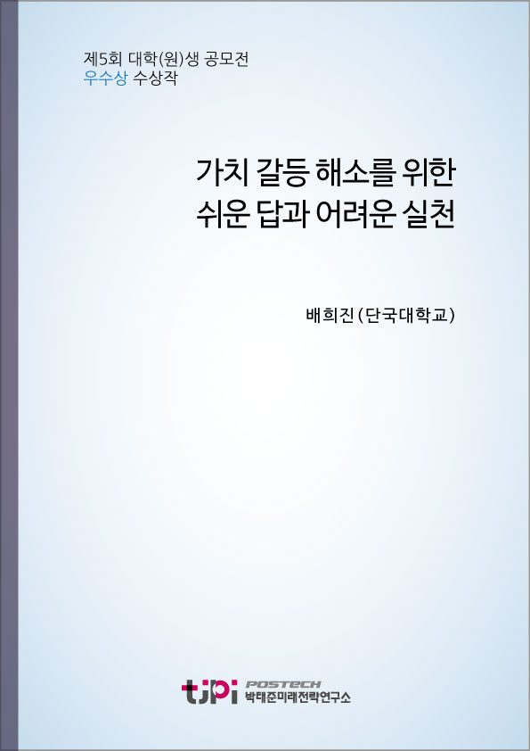

저자 배희진(단국대)발간일 2018-11-01

요 약
가끔 방송을 통해 사나운 강아지를 유순하게 만드는 프로그램을 본다. 주인의 강아지에 대한 이해의 부족, 강아지의 행동과 반응에 대한 적절하지 못한 대응 방식 등이 ‘나쁜’ 강아지가 되도록 한다는 것을 알 수 있다. 문제의 핵심은 이해의 부족, 일관성의 결여, 부정적 행동에 대한 단호한 대응과 바람직한 행동에 대한 적절한 보상이다.
사람은 어떨까? 2006년에서 2015년까지 482회나 방영되었던 SBS의 ‘우리 아이가 달라졌어요’라는 프로그램이 있었다.
대상에 대한 긍정적 변화의 가능성을 신뢰하고, 대상에 대한 정확한 이해와 지식을 바탕으로 내 행동 방식을 조금만 수정하면 대상이 근본적으로 변화한다. 하지만 아이와 강아지는 과연 같은 문제를 가지고 있었을까? 그리고 강아지 주인과 부모들은 모두 아이나 강아지가 변화하는 만큼 변화하였을까? 그렇게 많은 방송을 통해 전파한 육아 지식들이 있음에도 불구하고 왜 여전히 문제 상황들은 발생하는 걸까?
목 차
서론. 강아지와 사람은 다르다.
본론
- 왜 어른들과의 대화는 불편할까?
- 가치관은 어떻게 만들어지고, 우리의 문제는 무엇일까?
- 결국 모든 사회 문제는 가치관의 문제다.
- 가치 갈등은 어떻게 해소되어야 하는가?
- 가치 갈등은 반드시 배제되어야만 하는가?
결론. 서로 다른 신발을 신는 것이 좋다.
내 용
[2018 청년 에세이 우수상 03] 가치 갈등 해소를 위한 쉬운 답과 어려운 실천
배희진(단국대)
1.
서론
강아지와 사람은 다르다
가끔
방송을 통해 사나운 강아지를 유순하게 만드는 프로그램을 본다
우리가 바라는
착한
강아지로 변화시키는 과정이다
. ‘
주인
이 잘 못 들여 놓은 습관과 반응 방식을 정말 손
쉽게 바꾸는 바로 잡는 과정을 보면
문제는 강아지가 아니라 주인에게 있었음을 알 수 있다
주인의 강아지에
대한 이해의 부족
강아지의 행동과 반응에 대한 적절하지 못한 대응 방식 등이
나쁜
강아지가 되도록 한다는 것을 알 수 있다
문제의 핵심은 이해의 부족
일관성의 결여
부정적 행동에 대한 단호한 대응과 바람직한 행동에 대한 적절한 보상이다
사람은
어떨까
? 2006
년에서
2015
년까지
482
회나 방영되었던
SBS
우리
아이가 달라졌어요
라는 프로그램이 있었다
육아전문가와 함께
부적응 행동을 보이는 아이를 가진 가정의 문제점들을 해결해 나갔던 프로그램으로 분기마다 이루어지는 개편의 파도를 헤치고
10
년을 버틴 인기프로그램이었다
대가족이라는 자연적인 육아 기법
전수 형태가 사라진 한국 사회에서 많은 부모들에게 올바른 양육 방법에 지침을 제공한 공로가 컸다
여기에서도
역시 아동에 대한 이해의 부족과 부모의 부적절한 대응
일관성의 결여가 문제 요소였다
결국
문제 부모
부정적인 환경을 제공하고
그 과정에서 아이들이 부정적인 행동을 보인다는 것이다
이런
프로그램들을 시청하면 세상의 문제들이란 그렇게 심각한 것이 아니다
대상에 대한 긍정적 변화의 가능성을
신뢰하고
대상에 대한 정확한 이해와 지식을 바탕으로 내 행동 방식을 조금만 수정하면 대상이 근본적으로
변화한다
하지만 나는 조금 더 생각해보고 싶다
아이와
강아지는 과연 같은 문제를 가지고 있었을까
그리고 강아지 주인과 부모들은 모두 아이나 강아지가 변화하는
만큼 변화하였을까
그렇게 많은 방송을 통해 전파한 육아 지식들이 있음에도 불구하고 왜 여전히 문제
상황들은 발생하는 걸까
강아지를 키우는 것은 자신이 없으면 피하면 되는 일이지만
우리의 삶에서 피하기 어려운 육아 문제에 이렇게 좋은 방법들이 있다면
의무 교육 과정에서 필수 교과로 가르치지 않는 것일까
어쩌면 수없이 가르쳐왔지만
사회의 개선이나 도덕적 발전에 거의 기여하지 못 하는 도덕과 윤리 교육 대신에 가르치면 세상이 착한 사람들만
사는 곳으로 변화하지 않았을까
먼저
강아지 주인은 강아지에게 행동의 변화를 바랄 뿐이다
강아지 주인이 강아지의 정신
혹은 마음 자세의 변화를 요구하지 않는다
하지만 부모는 자녀에게
행동의 변화는 물론이고
정신적인 자세의 변화 즉
가치관의
변화와 올바른 정립을 바란다
가치관이 바르게 정립된다면 오히려 간헐적인 행동의 오류는 용서받을 수
있다
자신이 아끼는 벚나무를 도끼로 찍어버린 어린 워싱턴을 용서한 워싱턴의 아버지의 자세는 아들의
행위가 아니라 가치관을 보았기 때문이다
그래서 부모들은 자신의 자녀들을 훈육할 때
마음이 담긴 언어적 진술을 요구한다
하지만 여전히 문제는 남는다
인간의 언어가 정신을 그대로 반영하지 못 하고
가치관의 정립 여부를
객관적으로 진단할 적절한 방법이 없기 때문이다
개인적인
경험을 기초로 생각해보면 나를 중심으로 적당히 왜곡되어 남아 있는 기억 속에서 나는 어른들의 행동수정방식에 대해 나를 위장할 수 있는 능력이 있었다
내게 주어지는 이익
몇 개의 과자와
몇 마디의 칭찬을 받거나
예상되는 제재들
꾸중이나 여러 가지 불이익을 피하기 위하여 어른들이 원하는 아이로 위장하고
내 욕망의 만족
, TV
시청이나 게임하기
친구들과
뛰놀기를 추구할 수 있었다
어른이 된 지금도 나는 여전히 사회적 규칙에서 내 만족의 효용을 극대화하기
위하여 적절한 위장 전술을 구사할 수 있다
2.
왜 어른들과의 대화는 불편할까
집안에서
늘 보던 친한 분들을 제외하면 대부분의 어른들과의 대화는 나와의 나이 차이에 비례하여 불편하다
오랜만에
뵙는 아버지 친구분들과의 단순한 안부조차도 때로는 불편하다
근황을 묻고 잘 하라는 형식적인 인사들도
때로 불편하지만
조금 더 의욕을 가지고 나에게 좋은 삶의 지침이나 교훈을 주려고 하시는 분들은 그만큼
더 불편하다
지하철 옆자리에서 내가 아닌 세상의 젊은 모든 사람들을 대상으로 혼잣말처럼 무언가를 역설하시는
분들을 만나면 때때로 다른 칸으로 가고 싶다
하지만 나는 안다
말들이 때로는 내게 금과옥조가 되고
삶의 어려운 순간마다 중요한 팁이 될 수 있다는 것을 분명히 안다
그럼에도 불구하고 알레르기처럼 어른과의 대화 거부 반응이 생기는 이유는 무엇일까
그것은 내가 멍청해서일 수도 있고
혹은 미처 내가 깨닫지 못 하는
불편함의 이유가 있기 때문일 것이다
많은
사람들이 알고 있듯이 젊은 세대와 기성세대와의 갈등의 역사는 인류의 역사와 함께 한다
한국의 경우
이 대립 양상은 가정이나 사회에서 부분적으로 나타나는 경우도 있지만
급격한 사회 변화 과정에서 사회
전반적인 현상으로 드러난다
정치적으로는 혁신과 보수라는 가치 대립이 신세대와 구세대의 대립 양상으로
나타나서 정당지지도와 정치적 실천의 차이로 드러나기도 한다
. TV
프로그램에서도 양 세대가 함께 보는
프로그램은 가치관의 개입이 요구되지 않는 국가적 스포츠 행사 프로그램 정도이다
음악 프로그램
토론 프로그램
여행 문화 프로그램
드라마도 세대별로 다른 선호도에 맞추어 제작된다
지금도
주말이면 서울 덕수궁의 대한문 근처에서 세칭
태극기 집회
열린다
영어의 몸이 된 전직 대통령의 석방을 촉구하고 현정부의 정책을 비판하는 집회의 참가자들은 대부분
사회적으로
어르신
으로 불리는 분들이다
한 때는 수십만 명의 참가자들이 모였다고도 하는 이 집회가 요구하는 주장들은 현정부의 설립 기반이라 할 수
있는
촛불 집회
의 주장과는 대척점에 놓여 있다
양측의 표면적인 주장의 논거는 유사하다
모두 헌법 가치를 수호하고
민주주의적 가치를 실현하자는 주장에서 출발한다
하지만 그 실천 과제에 대해서는 도저히 타협점을 찾을
수 없었다
지금은 헌법재판소의 결정에 의하여 표면적인 대립 양상은 나타나지 않고 있지만
기회만 주어진다면 양측의 대립은 언제든지 재현될 수 있다
부분적으로는
물리적인 충돌까지 나타났던 이러한 대립의 근간에는 경제적인 이익이나 다른 사회적 가치의 배분의 문제가 아닌 순수한 가치관의 대립이 자리 잡고 있기
때문이다
최근에
주말마다 대학로에서 여성인권 향상을 주장하는 집회가 개최되고 있다
전 세계적인 붐을 타고 한국에까지
이어진
‘Me Too’
운동에 기존 한국 사회에 발생했던 여성에 대한 여러 가지 범죄들에 대한 사회적
대응에 대한 불만이 더해지고
오랜 세월에 걸쳐 누적된 여성에 대한 여러 가지 억압적 조건과 상황에
대한 불만의 표출이 다른 모든 가치에 대한 부정과 배타적인 양상으로 나타나고 있다
이러한 운동의 양상의
독특한 점은 기존 사회의 긍정적 가치를 수용하지 않으며
반사회적 가치 집단의 공격적 성향을
미러링
이라는 이름으로 자신들의 운동 방식으로 정당화하고 있다는
점이다
고대 함무라비 법전의 복수법의 정신을 계승하는 것 같은 이 운동의 자기 정당화 과정은 모든
여성의 상황을 남성에 의한 억압적 구조의 문제로 정의하고
남성 모두를 타도 대상으로 규정하기 때문에
다른 가치관과의 공존을 인정하기 어렵다
최저
임금 인상을 둘러 싼 노동계와 사업주들 간의 갈등은 주요 언론에서는 주로 작은
음식점이나 편의점 같은 소상공업자들의 수익 붕괴 현상을 야기하는 원인으로
표현된다
인건비 문제로 편의점을 폐업해야겠다는 한 업주는 자신을 시급
‘4,000
으로 정의했다
식당
같은 곳에서는 시간제 고용인의 업무 시간을 줄였다라고 하거나 사람 수를 줄였다는 기사가 주로 등장하여 최저 임금 인상의 부당함을 지적하는 논거로
활용되고 있다
그 과정에서 정당한 최저 임금 산정 방법에 대한 고찰이나
생산성 향상을 위한 논의
최저 임금으로 한국 사회에서 인간다운
삶을 살 수 있는가의 문제는 고려되지 않고 있다
. 2017
기준으로
40,000
여개가 넘을 것으로 추산되는 편의점의 경우
생산성
즉 이윤 창출 구조가 변화하지 않는 한 시간제 고용인을 고용하는 업체의 경우 최저임금 인상이 이익 감소로 이어질 수밖에 없다는 점은 분명하다
하지만 그 근간에는
2013
년 기준으로 전국에
488,000
개로 추산되는 프랜차이즈 가맹점 수가 말해 주듯이 자신이 가진 고유한 기술과 노하우로 운영되는 소상공업이
아니라 누군가 가진 노하우에 대가를 지불하는 운영 방식의 문제가 있다
가치관이
다른 사람들과의 대화는 사적이거나 객관적인 정보를 주고받는 경우가 아니라면 대부분 불편하다
때로는
주어지는 객관적인 지식조차도 가치관의 영향을 받아서 선의로 전달되지 않을 수 있다
가치관이 다르면
세상을 보는 관점이 달라지고
어떤 상황에 대한 해석과 수용 자세가 달라진다
여기에다 한 번 형성된 가치관은 한 사람의 평생의 지침이 되고
가치관을 부정하는 것은 그 사람의 삶을 부정하는 것이 된다
따라서 가치관이 다른 두 사람의 대화는
평행선을 달리며 겉돌거나 서로 상대방을 부정하며 대립적인 양상으로 진행되기 마련이다
3.
가치관은 어떻게 만들어지고
우리의 문제는 무엇일까
가치관은
우리가 평생을 살아가는데 필요한 행동의 기본 원칙이다
이 원칙은 오랜 세월
적어도
20~25
년 정도의 보육과 교육 과정에서 형성되며
일정한 사회적 상호작용 과정에서 형성된다
자의식이 형성되는 과정에서
아이들은 일정한 행동의 제약을 받고
그 행동의 제약이 행동의 준칙이 된다
이 때
어떤 행동은 정적으로 강화되고
어떤 행동은 부적으로 강화된다
칭찬을 듣는 행동을 아이들은 대체로
자신의 행위 준칙으로 삼게 되며
꾸중이나 제재를 받는 행동을 억제하는 준칙으로 삼는다
조금 더 성장하면 행위가 아니라 가치 자체가 행위 준칙으로 학습된다
부모님과
웃어른을 존경해야한다던가
친구들과 사이좋게 지내야한다던가 하는 식의 가치 원칙이 주어지고
일정한 행위와 지식 시험을 통하여 그 가치관이 내면화되었는지 여부를 검증받는다
이 시기에 관념적으로 주어지는 가치 원칙과 아이가 실제로 경험하는 가치 원칙이 다른 경우 이중적이나 위선적인
가치관을 갖게 된다
청소년기가
되면
윤리
라는 이름으로 모든 가치의 근원에 대한 지식과
이해를 요구받는다
문제는 한국의 경우 이 시기가 대학 입학이라는 인생의 과업이 막중하게 주어지면서
가치를 행동과 경험을 통하여 내면화하지 못하고 지식으로 피상적으로 학습된다는 점이다
또한 많은 사회
현상들이 다양하게 표출되는 것을 다양한 매체를 통하여 보게 되고
그에 대한 다양한 가치관에 입각한
해석들과 만나지만
이를 하나하나 검증하고 고찰할 기회를 갖지 못한다는 점도 문제가 된다
즉 대부분의 청소년들이 가치적인 측면에서 미성숙한 상태로 성인이 된다
정확한
이유는 알 수 없지만 일단 성인기가 되면 인간의 가치관은 일종의 경제주의에 기울어진다
많은 성인들은
자신도 모르게 경제적으로 사고하고 경제적으로 살고 싶어 한다
최소비용
최대효율의 명제가 경제적인 문제인 동시에 삶의 문제로 확장된다
세상의
모든 일이 같은 경우는 한 번도 없다는 것을 잘 알지만
우리는 많은 것들을 유사한 범주에 넣어서 같은
것으로 분류하고
같은 대응 방법을 적용하며 살아가고자 한다
시기가 되면
거기서 거기야
라던가
, ‘
인생 뭐 있어
?’
라는 조금은 도통한 듯한 말들을 입에 담기 시작한다
그래서 크기와 무게가 다른 사과들을 사면서 비슷한 외관을 지니면 같은 가격을 주고 구입한다
이런 점에서 일정한 규격을 갖춘 프랜차이즈 상품이나 공산품이 인간의 경제적 사고와 취향에 가장 잘 부합하는
물건이 된다
흔히
개성
으로
정의할 수 있는 고유한 성격과 행동과 생활 방식이 만들어지고
설익은 가치관으로 내 이익에 반하는 현상과
가치 체계에 대해 공격적인 성향을 갖는
군중’의 일부가 된다
그리고
미성숙한 채로 굳어진 가치관을 기준으로 우리는 평생을 살아야 한다
4.
결국 모든 사회 문제는
가치관의 문제다
사람과
사람
사람과 사회 사이에서 발생하는 모든 갈등은 결국 가치관의 문제이다
인간은 태어난 이후 일정 기간이 지나면서 행동과 그 행동의 사회적 반응과 결과에 기초하여 일정한 가치관을 형성하고
평생을 그 가치관에 근거하여 살아간다
인간은 자신이 지닌 가치관에
근거하여 올바른 행동을 하고자 하며
그 때
삶의 주체로서
자부심을 가진다
자신의 가치관이 부정당하거나
외부의 압력에
의하여 가치관에 반하는 행동을 해야 할 때
인간은 자신의 존재 가치가 부정당하는 느낌을 가지게 되며
분노를 느끼고 이를 드러내거나
심한 경우에는 정신 질환으로 발전하기도
한다
가치관의
차이에서 오는 갈등은 개인의 내면에 이중적 혹은 그 이상의 가치가 내재하여 발생하는 경우
개인이 가진
가치관이 다른 개인이 가진 가치관과 다르고 이것이 생활 속에서 드러나 서로 충돌하는 경우
사회의 지배적
가치관이 존재하고 개인이 이와 다른 가치관을 가진 경우
사회의 지배적 가치관이 존재하고 개인의 가치관도
이와 같지만 그 가치관이 특정 개인 혹은 집단의 인권을 지나치게 억압하는 경우 등의 양상을 나타난다
가치관
갈등의 문제는 쉽게 정의하기 어려운데 그 이유는 한 사람의 지위와 역할 기대수준이 다양화되었기 때문에 한 사람의 입장이 여러 가지 가치 갈등 상황에서
다르게 나타날 수 있고
뚜렷한 집단과 집단과의 갈등으로 규정하기 어렵기 때문이다
가령 나 자신은 정치적으로는 개혁적인 성향을 가지지만
보수적인
가족 가치관을 가지고 있고
여성의 인권 향상에 관심은 있지만 모든 남성을 적으로 규정하지는 않으며
종교적으로는 애매한 불교 신자이지만 다른 종교에 대한 특별한 배타적인 입장은 가지고 있지 않다
한국의 정치 경제적 개혁의 필요성에는 동조하지만
대외적으로는 뚜렷한
근거 없는 민족적 자부심을 가지고 있으며
수도권 소재 중위권 대학의 대학생으로서 출신 대학에 따른
차별에는 반대하지만
각자의 능력과 학력에 따른 차이는 인정받아야 한다고 생각한다
5.
가치 갈등은 어떻게 해소되어야
하는가
가치
갈등 즉 가치관의 대립을 해소하기 위한 답은 단순하다
모든 사회 구성원들이 자신의 가치관 체계에 관용의
가치를 포함시키는 것이다
현대 사회에서 이보다 더 명확하고 간단한 해결책은 없다
이 경우 관용의 가치는 다른 가치관을 수용하거나 다른 가치관을 가진 사람들의 행위를 용서하는 것이 아니다
당연히 내 가치를 부정하는 것도 아니다
. ‘
관용
이란 다른 가치관이 비록 나에게 일정 정도의 불쾌함이나 불편함을 주더라도 그것이 나의 삶의 근간을 위협하거나
돌이킬 수 없는 정도의 피해를 주는 것이 아니라면
상호주의적인 관점에서 그 불편함을 참아주는 것이다
사소하게는 기독교인인 내 친구가 식당에서 함께 식사를 할 때
개인적으로
간단한 감사 기도를 하는 동안 배고픔을 참아주는 것이 관용이다
하지만
비록 직접적으로 나의 이익을 침해하는 것은 아니지만 일본의 역사 왜곡이나 독도 영유권 주장을 인정하는 것은
관용의 범주를 넘어서는 것이다
관용이란 다시 해석하면
서로
다른 가치관을 가진 사람들 사이의 공존의 가능성을 찾고 그 경우 공존을 서로 인정하는 것이다
관용의
범주에서 가치 갈등이 해소되지 않는 경우의 대안은 토론이다
일정한 조건 하에서 서로의 공통점과 관용의
범주를 찾기 위한 토론 과정이 필요하다
문제는 우리 사회의 경우 성장과정에서 올바른 토론 방법을 학습할
기회를 갖지 못하고
, ‘
큰 소리
를 내는 사람이 이익을 차지하는
사회적 문제 현상을 접하는 기회가 더 많다는 점이다
그 때문에 모두 자신의 목소리를 내는 데에는 익숙하지만
다른 사람의 목소리를 듣는 데에는 매우 서투르다
다른 가치를 비난하는
데에는 능숙하지만
다른 가치를 인정하는 데에는 매우 미숙하다
물론
건전한 토론을 가능하게 하기 위해서는 주장과 논거
전제와의 관계를 합리적으로 검토할 수 있는 합리적
사고 방법을 터득하는 것도 필요하다
이러한
관용을 토대로 한 합리적인 가치 사고를 하기 위해서는 당연히 교육의 정상화가 필요하다
교육 과정에서
정당한 노력이 공정하고 공평하게 평가되는 경험을 하도록 해야 한다
이와 함께 일방적이고 정답이 하나뿐인
가공된 지식을 암기하는 방식의 학습에서 토론과 탐구
사고를 통하여 새로운 답을 찾는 방식으로 교육
방식과 평가가 전환되어야 한다
다음으로 이 모든 것의 근간이 되는 사회 역시 보다 공정하고 공평한
과정이 인정받는 사회가 되어야
학습한 지식과 이해가 실제 현실이 분리되는 위선적이고 모순적인 경험을
하지 않도록 해야 한다
6.
가치 갈등은 반드시 배제되어야만
하는가
가치
갈등은 가치 다양성에서 비롯한다
가치 다양성은 사회적 갈등의 요소가 될 수도 있지만 공존의 가치를
인정하는 관용정신이 존재하는 경우 사회를 건강하게 발전시키는 요소가 될 수 있다
사람들이 원하는 재화가
무한하지 않다는 점에서 대체재의 다양성을 확보하는 것은 중요하다
여기에 사람들의 가치 선호도가 다르면
문제 해결이 더 쉬워진다
여름철 휴가를 보내는 방식에 있어서 모든 사람이 바닷가에서 해수욕을 바란다면
관련 업체는 번창할지 몰라도 정작 바다를 찾은 사람들의 효용은 부정적으로 하락할 것이 분명하다
어떤
사람은 바다를
어떤 사람은 산과 계곡을
어떤 사람은 스포츠를
또 다른 사람은 문화 활동을 휴가를 보내는 방식으로 선호할 때
한정된
재화를 차지하기 위한 경쟁도 완화되고 각자의 경험의 효용도 상승할 것임이 분명하다
또한
한 사회의 다양성은 그 사회가 다양하고 급하게 변화하는 현대 사회의 환경에 대한 적응력이 뛰어나다는 반증이 될 수 있다
굳이
집단 지성
효용에 대해서 말하지 않아도 다양한 사고가 문제에 대한 다양한 접근 방식을 모색하는 데에 유리하다는 점은 명확하다
우리는 이미
19
세기말에 근대화 과정에서 사회적 다양성을 갖추지
못했기 때문에 급변하는 사태에 제대로 대응하지 못했던 경험이 있다
또한 미국이 유럽 사회보다 발전하기
시작한 시점이 유럽에서 다양한 인재들이 미국으로 건너가서 미국 사회의 다양성을 증가시킨 이후라는 점을 잘 알고 있다
우리나라의 경우에도 남한이 북한보다 여러 측면에서 발전할 수 있었던 것은 상대적으로 개인의 창의성과 다양성을
보장할 수 있었기 때문이었다
결국
가치 다양성은 말살되거나 배제되어야 하는 것이 아니라 더 높은 수준에서 조정되고 조화를 이룸으로써 그 사회의 건전한 발전을 이루는 바탕이 되도록
해야 한다
7.
결론
서로 다른 신발을 신는 것이 좋다
한국
사회에서 현재 가장 큰 가치관의 갈등은 남녀 간의 사회적 지위와 역할에 대한 갈등
사회적 희소가치의
분배 방식에 대한 인식 차이에서 오는 갈등
시대의 변화와 함께 노인의 역할이 상대적으로 축소되는 과정에서
발생하는 노소간의 갈등
등이 있다
한 대기업의 경제 연구소에서는
이러한 가치 갈등 조정 비용이 연간
82
~242
조에 이른다고
진단한 적이 있다
개인적으로는 이러한 비용적인 측면보다는 그 비용의 효용이 제대로 나타나지 않는다는
점을 지적하고 싶다
그렇게 많은 비용을 들여서 조정하고 있지만 근본적인 해결이 되지 못하기 때문에
매년 같은 비용을 들이고 갈등 양상은 점점 더 심화되고 있기 때문이다
마치 안으로 곪고 있는데
겉으로 드러난 종기만 계속 소독하고 있는 것과 마찬가지이다
어린
시절에 신발 크기나 옷의 크기가 다른데 왜 같은 가격이 매겨지는지 궁금했다
내가 생각하기에는 신발이나
옷이 더 크면 더 많은 재료가 들어가므로 그만큼 가격이 더 비싸야한다고 생각했다
하지만 대부분 가격은
신발의 크기가 아니라 신발의 재질이나 형태에 따라서 달라졌다
덕분에 신발을 사기 위해서는 크기와 디자인
재질
가격까지 많은 고민을 해야 했다
만약 모든 신발이 조선 시대의 짚신이나 갖신처럼 한 가지 재질과 한 가지 모양만 있었다면 그런 고민은 없었겠지만
나만의 신발을 새로 산다는 즐거움 역시 없었을 것이다
사회
문제의 근간에 자리 잡은 가치 갈등을 한 순간에 해소하는 것은 불가능하며
상당한 노력을 기울여도 완전히
가치갈등이 해소되는 것은 기대할 수도 없고 기대해서도 안 된다
그 보다는 가치 다양성을 긍정적으로
인정할 수 있는 공정하고 공평한 사회를 만들기 위하여 노력하여야 하고
교육
보다 실질적이고 내실 있는 새로운 교육을 통하여 미래 사회를 위한 초석을 다지는 방안을 장기적인 안목에서 실천하여야
한다
무엇보다도 가치 다양성이 사회적 원동력으로 작용할 수 있도록 모두가
관용
의 가치를 재확인하고 실천하고자 하는 노력이 선행되어야 한다

이 글은 구 홈페이지에서 옮겨온 것입니다. 원문 보기